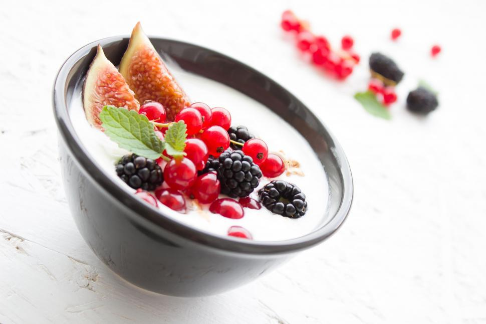

Skyr with flavor
Everybody knows that natural Skyr is to eating what water is to drinking. This recipe aims to make the experience more enjoyable.
Ingredients
- 1 Skyr (natural)
- 15g protein powder
- 50g blueberries
- 1 banana
Steps
- First, put all the Skyr out of its original packaging into a big cup.
- Add a scoop of protein powder with the Skyr. Mix really well.
- Wash and add the blueberries into the mix.
- Cut the banana into thin pieces and arrange them on top of the mix.

Congratulations! Now you can get yoked while also enjoying a tasty and sweet treat!
Home page